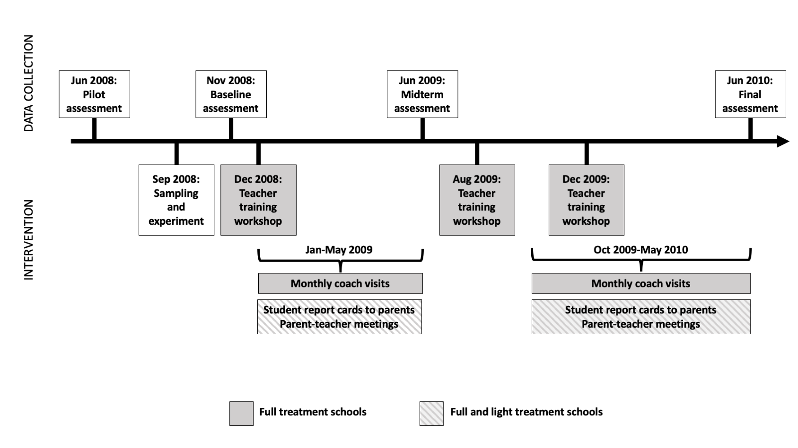
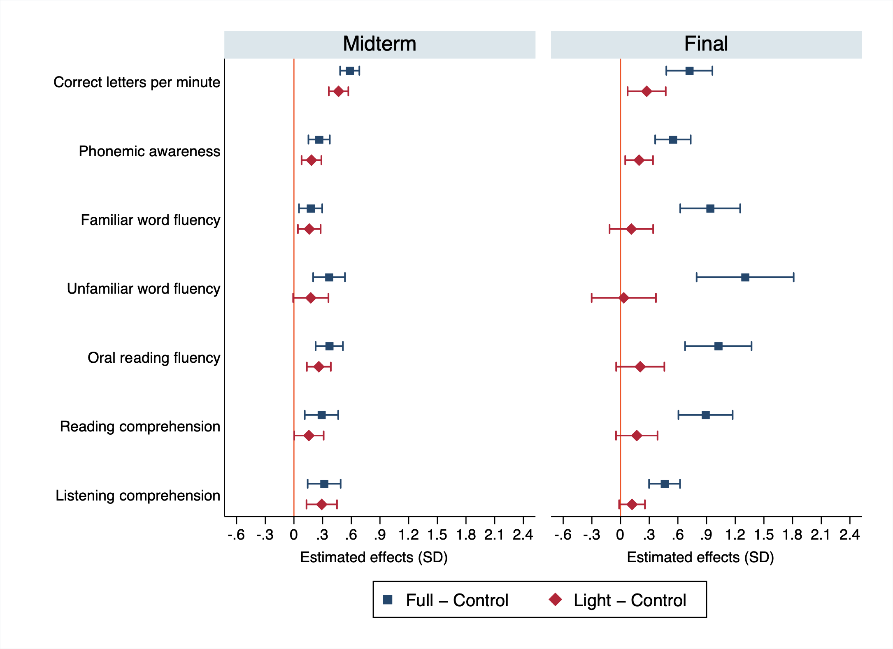
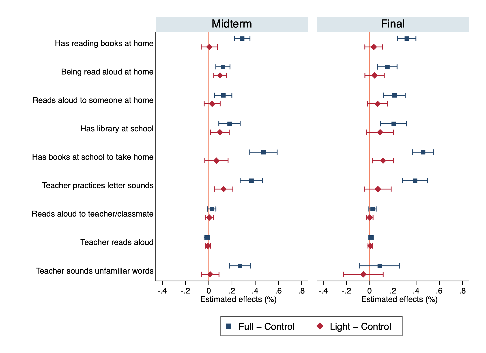

Abstract
This paper examines experimentally the impact of a literacy intervention for primary-school students in Liberia and the mechanisms underlying its effects. The intervention combined intensive teacher training, instructional materials, and coaching with activities designed to increase parental and community engagement. Using a cluster-randomized design and longitudinal assessment data, we find large improvements in reading achievement in treatment schools, with gains increasing over time and reaching up to one standard deviation across key literacy domains. A latent-factor model of skill formation indicates that 43% of the total effect operates through improvements in schooling investments and teaching practices, while a further 13% is explained by increased parental investments. We find no significant overall effects on numeracy skills, indicating neither spillovers nor crowding out.
Why this programme?
Expanding school access does not guarantee that children learn. This problem was especially acute in Liberia after a 14-year civil conflict left the country with shortages of trained teachers, functioning schools and learning materials. A 2008 pilot assessment found that Grade 2 students read an average of only 18 words per minute.
EGRA Plus Liberia was designed to improve the process of learning both inside and outside the classroom. The paper asks not only whether the programme raised reading achievement, but why: how much of the gain came through teaching and school resources, how much through parents, and how much remains attributable to other channels?
The intervention
The Liberian Ministry of Education launched EGRA Plus in 2008 with support from the World Bank and USAID/Liberia. The programme targeted students in Grades 2 and 3 and had two components:
School and teaching support: one-week teacher workshops held each semester, teaching guides and reading materials, followed by monthly classroom visits from trained coaches who helped with lesson planning and implementation.
Parental and community engagement: regular student report cards, parent–teacher meetings, inter-school reading competitions and radio programming about early-grade reading and how families could support it.
Schools in the full-treatment arm received both components. The light-treatment arm received only the parental and community component, while the control group received neither. This design makes it possible to distinguish the value of the full instructional package from engagement activities alone.

Experimental design and data
The evaluation covers a nationally representative sample of 180 public primary schools. Schools were organized into 45 geographic clusters and randomly assigned within districts to the full-treatment, light-treatment or control arm—60 schools in each group.
Independent assessors tested random samples of Grade 2 and Grade 3 students at baseline in November 2008, at midline in June 2009 and at the final assessment in June 2010. The design uses repeated cross-sections rather than following the same children: the analysis includes 2,988 students at baseline, 2,882 at midline and 2,688 at the final assessment.
The Early Grade Reading Assessment measures seven dimensions of literacy: letter recognition, phonemic awareness, familiar- and unfamiliar-word fluency, oral-reading fluency, reading comprehension and listening comprehension. The final round also includes six numeracy domains. Student, teacher and principal surveys record home reading support, classroom practices, coaching, training and school resources.
Main findings
The full programme produced large and growing literacy gains. Six months after implementation, full-treatment effects ranged from 0.17 to 0.58 standard deviations across the seven reading domains. By the final assessment, gains reached roughly 0.5 standard deviations in phonemic awareness and listening comprehension, 0.7 in letter recognition, about 0.9 in reading comprehension and familiar-word fluency, and more than one standard deviation in unfamiliar-word and oral-reading fluency.

The lighter package was not enough to sustain comparable gains. Its effects were smaller at midline and, by the final assessment, remained statistically detectable only for correct letters per minute and phonemic awareness. The contrast suggests that information and community engagement worked best when paired with training, materials and coaching.
The programme changed both school and home learning environments. Children in full-treatment schools were more likely to have reading books at home, be read aloud to, read to someone at home, practise letter sounds in class and have books available through school. Effects on these inputs ranged from approximately 22% to 63% relative to control-group means.

How were the gains produced?
Reading skills and investments are measured through multiple, imperfect indicators. To reduce measurement-error bias, the paper estimates a latent-factor model that combines the test items and survey responses into factors for literacy skills, parental investments, schooling investments, household background and wealth.
The model estimates a total full-treatment effect of about 0.97 standard deviations. Improvements in schooling investments and teaching practices account for 0.42 standard deviations, or 43% of the total effect. Parental investments account for a further 0.13 standard deviations, or 13%. Household background and wealth explain virtually none of the gain.
Around 44% of the effect remains direct—that is, it is not explained by the measured mediators. This residual may capture other changes in classroom management or learning conditions, remaining measurement error, or mechanisms that the surveys could not observe.
Did literacy come at the expense of maths?
No. The latent-factor analysis finds no statistically significant overall effect on numeracy. Some individual mathematics domains show limited positive reduced-form evidence, but there is no indication that the emphasis on reading crowded out mathematics learning.
Interpretation and limitations
The randomized design identifies the programme’s overall effects, while the mediation exercise additionally relies on the structure and assumptions of the latent-factor model. Inputs such as home reading and classroom practices are partly self-reported, and the data follow repeated samples of students rather than the same children over time. The sizeable unexplained direct effect also shows that the available measures do not capture every channel.
The findings nevertheless point to a clear design lesson: instructional materials alone are not the story. Sustained teacher development and coaching appear central, and improvements in the home reading environment add a meaningful contribution. Successful literacy policy may therefore require a coordinated package that changes daily instruction while giving families practical ways to support learning.